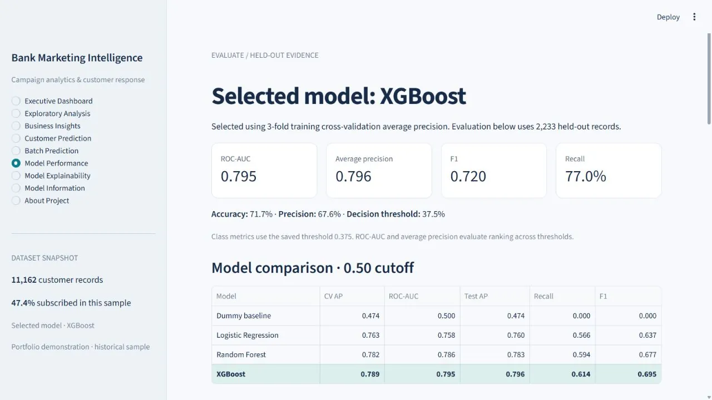
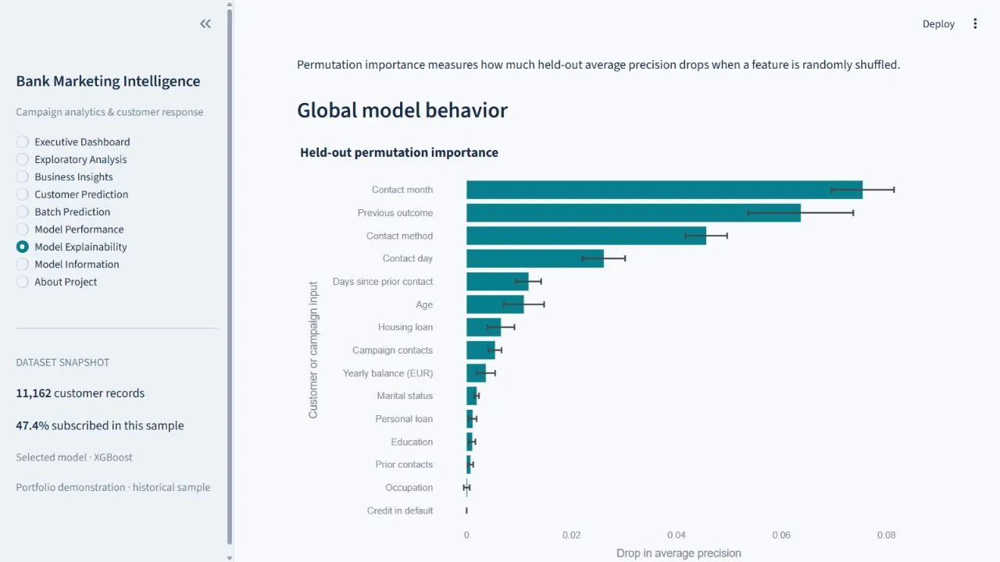
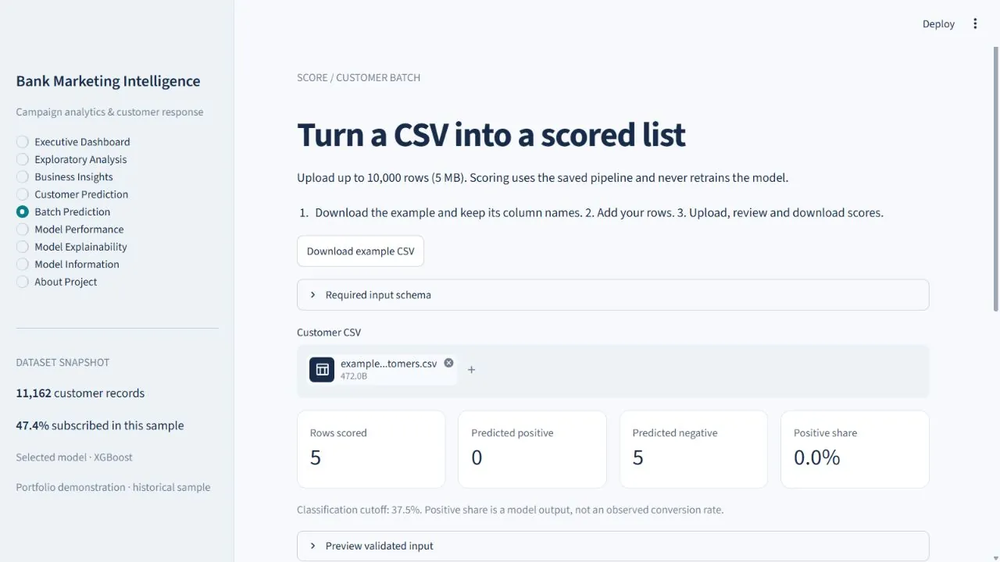

Selected work / Case study 03
Bank Marketing Intelligence
Who’s worth calling? A term-deposit model that only uses what the bank knows before the phone rings — and an app that says what its numbers do and don’t mean.
The problem
Marketing calls cost time and money, and contacting every customer is rarely the best strategy.
The question: using historical campaign data, which customers look more likely to subscribe to a term deposit before a planned call?
Why it matters
This dataset is a classic trap. Its strongest predictor, call duration, is only known after the call has happened. A model that uses it scores beautifully in a notebook and is useless on the day.
My contribution
Built solo, end to end: exploratory analysis, leakage-aware feature preparation, model comparison and tuning, threshold analysis, explainability, a nine-page Streamlit app with single and batch scoring, and the tests that hold it together.
Decisions
- Drop call duration everywhere.It is excluded from training, from the single-customer form and from batch scoring. Extra uploaded columns, including duration, never enter the model.
- Fit transforms inside each fold.Balance is capped at the training 1st/99th percentiles and campaign at the 99th — all refit inside each training fold, so evaluation never sees information from the data it is judging.
- Select on average precision, not accuracy.Dummy baseline, logistic regression, random forest and XGBoost were compared with stratified 3-fold cross-validated average precision on the training split.
- Treat the threshold as a choice.0.375 maximises F1 on out-of-fold training predictions. The app labels it exploratory, not cost-optimised, and shows the trade-offs across thresholds.
- Explain on held-out data.Permutation importance is measured as the drop in held-out average precision when each feature is shuffled.
Evidence
Held-out evaluation on 2,233 of 11,162 records, as shown in the deployed app.
| Model | Bar | AUC |
|---|---|---|
| Dummy baseline | 0.500 | |
| Logistic regression | 0.758 | |
| Random forest | 0.786 | |
| XGBoost (selected) | 0.795 |
- Average precision
- 0.796
- Recall at 0.375
- 77.0%
- Precision at 0.375
- 67.6%
- F1 at 0.375
- 0.720



| Automated test | What it protects |
|---|---|
| Selection uses CV | Model choice comes from cross-validation, not the test set |
| Caps do not learn from inference | Scoring new customers never refits preprocessing |
| Extra columns never enter the model | Duration and identifiers in an upload are ignored |
| Saved metrics match test predictions | The numbers in the app are the numbers the model produces |
| Batch equals individual, no fitting | A CSV row scores exactly like the same customer typed in |
16 tests across the pipeline and the Streamlit app, in the repository’s tests/ folder.
Limitations & next steps
Associations, not causes. A segment that subscribed more often in the past is not proof that calling it will cause more subscriptions. The app frames findings as things to test next.
- One historical sample (11,162 records; 47.4% subscribed — far more balanced than a real campaign would be).
- The threshold is F1-optimal, not cost-optimal; a real deployment needs the cost of a call and the value of a subscription.
- The dataset is attributed to a public Kaggle upload; its redistribution terms should be confirmed before wider use.
Outcome
A deployed decision-support app — dashboard, EDA, business insights, single and batch scoring, model analysis — built on a model that could actually be used before the call.
Open the live app (opens in a new tab)
Hosted on Streamlit Community Cloud, which may take a moment to wake up.